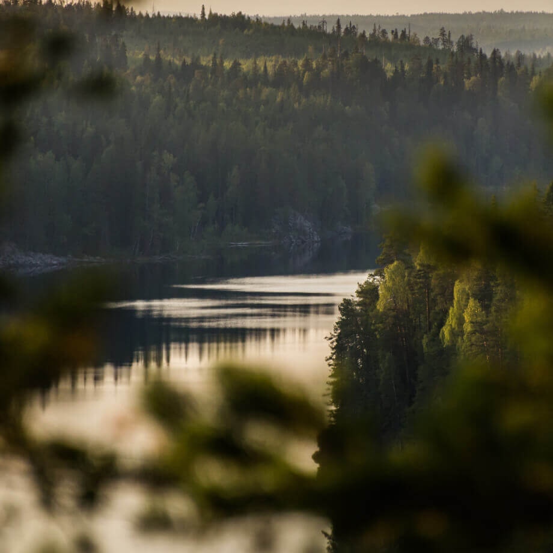

Silk Road
Ancient trade route, linking China with the West
the route between the two great civilizations of Rome and China.
What was the Silk Road?
The Silk Road was an ancient trade route that linked the Western world with the Middle East and Asia. It was a major conduit for trade between the Roman Empire and China and later between medieval European kingdoms and China. Silk Road, actually the Silk Roads, was the vast trade networks developed over time according to shifting geopolitical contexts throughout history. For example, merchants from the Roman Empire would try to avoid crossing the territory of the Parthians, Rome’s enemies, and therefore took routes to the north instead, across the Caucasus region and over the Caspian Sea. Similarly, whilst extensive trade took place over the network of rivers that crossed the Central Asian steppes in the early Middle Ages, their water levels rose and fell, and sometimes rivers dried up altogether, and trade routes shifted accordingly. The great variety of routes were available to merchants transporting a wide range of goods and travelling from different parts of the world, by both land and sea. Most often, individual merchant caravans would cover specific sections of the routes, pausing to rest and replenish supplies, or stopping altogether and selling on their cargos at points throughout the length of the roads, leading to the growth of lively trading cities and ports. The Silk Roads were dynamic and porous; goods were traded with local populations throughout, and local products were added into merchants’ cargos. This process enriched not only the merchants’ material wealth and the variety of their cargos, but also allowed for exchanges of culture, language and ideas to take place along the Silk Roads. China also received Nestorian Christianity and Buddhism (from India) via the Silk Road.
-
The Silk Road began over 2,100 years ago
-
The total length of the Silk Road was about 4,000 miles (more than 6,400 km)
-
Silk was introduced to the Roman Empire 1st century BCE
-
the most famous Silk Road trader/explorer was Marco Polo
-
The Silk Road was severed around 1368


Куршская коса
URL
park-kosa.ru
Здесь, посреди лесов и песчаных дюн, вы сможете увидеть два водных горизонта — спокойного Куршского залива с одной стороны и подёрнутого рябью волн Балтийского моря с другой. Уникальная природная зона на краю российского анклава.
На этом Калининградская область не заканчивается. Для путешественника и исследователя там же по соседству — самая западная точка России, Балтийская коса, — и немецкое наследие россыпи небольших приморских городов. Атмосфера здешних мест исключает суету, окуная в спокойствие природы и запах стального, прохладного моря.
Кольский

Почти весь полуостров находится за Полярным кругом. Саамская тундра, от которой на юг — тайга, а на север — Ледовитый океан, прикидывающийся Баренцевым морем.
Возможно, вы смотрели Звягинцева и даже слышали историю арктического фестиваля в Териберке. Возможно, слово «Хибины» не осталось под снегом школьных воспоминаний об уроках географии. Возможно, вы не интересовались пронизывающей земную кору сверхглубокой скважиной, а от апатитов вас давно накрывает апатия. Но ваша мечта увидеть северное сияние начинает сбываться с билетом в Мурманск.
Алтай
URL
Facebook
Алтай — одно из красивейших мест в России. В первую очередь из-за гор: если ехать вдоль хребта, вы увидите склоны, усыпанные соснами, горные реки и озёра. А если вы откроете в автомобиле окна, сможете познакомиться с невидимым чудом здешних мест — горным воздухом.
Климат на Алтае умеренный, поэтому ехать сюда лучше всего летом. Так вы увидите всё разнообразие местной флоры и фауны. По лесам Алтая бродят лоси, над хребтами летают орлы, а на равнинах пасутся косули. И знаменитые манулы — тоже обитатели Алтайского края.
Зимний Байкал

Всем известен Байкал как крупнейшее озеро в мире. Многие также знают, что это самый большой источник пресной воды и одно из красивейших мест в России.
Конечно, это всё так. Но Байкал ещё идеальное место для соревнований по скийорингу. Это такой вид спорта, когда лыжник привязывает себя к мотоциклу, и тандем старается развить как можно бóльшую скорость на льду. В марте 2019 года на фестивале «Байкальская миля» был поставлен мировой рекорд — 197.011 км/ч.
Карелия
Сибирь заканчивается не на Урале, а в Карелии: образующая тайгу сибирская лиственница не растёт западнее Водлозера. Зато здесь она вымахивает на 30 метров — леса карельских национальных парков из-за непроходимых болот никогда не знали топора. Некоторым соснам уже больше чем полтысячелетия. Прикоснитесь к живому существу, видевшему солнце раньше, чем увидал его Иван Грозный. В девственном лесу на сотню километров не встретишь тропы. А на редких тропинках деревья в паре метров от земли помечены медвежьими когтями. Чтобы все знали, кто тут хозяин.